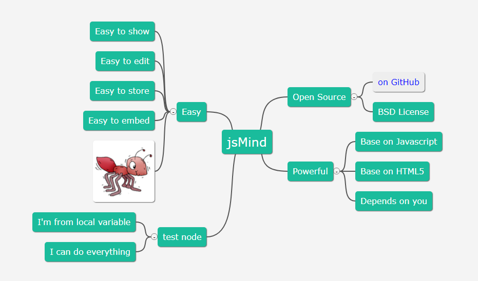

效果图:

jsmind组件下载地址：https://files.cnblogs.com/files/fengyeqingxiang/jsmind.zip
后端代码，此处以C#编写的后台，Java或其他语言同理
using Newtonsoft.Json;
using System;
using System.Collections.Generic;
using System.IO;
using System.Linq;
using System.Text;
using System.Web;
using System.Web.Mvc;
namespace Web.Controllers
{
public class TreeDataController : BaseController
{
BLL.TreeData bll = new BLL.TreeData();
#region 以树形式展示图纸目录
/// <summary>
/// 视图
/// </summary>
/// <returns></returns>
public ActionResult DrawingTree()
{
if (CurrentUser == null)//验证用户是否登录
return new HttpUnauthorizedResult();
return View();
}
#endregion
/// <summary>
/// 文件树视图，页面初始化获取树数据，以json形式返回
/// </summary>
/// <returns></returns>
public ActionResult GetTreeData()
{
List<FileNode> listTree = InitTree();
return Json(listTree, JsonRequestBehavior.AllowGet);
}
/// <summary>
/// 初始化加载树
/// </summary>
/// <returns></returns>
private List<FileNode> InitTree()
{
List<FileNode> listNodes = new List<FileNode>();
var newTree = bll.QueryList(); //数据库查找数据源，此处也可以定义虚拟数据
#region 首次加载检测不到数据时默认插入项目节点
if (newTree.Count == 0)
{
bll.Add(new Model.TreeData()
{
BgColor = "#eee";//节点背景颜色
FgColor="#eee";//节点字体颜色
Level = 0,
Order = 0,
TreeName = "项目名称",
TreeCode = "节点编码",
ParentId = 0,
UpdateTime = DateTime.Now,
FilePath=null
});
}
#endregion
#region 一次性存储数据源，后面后面递归子集时多次使用
List<FileNode> nodeList = new List<FileNode>();
foreach (var item in newTree)
{
FileNode node2 = new FileNode();
node2.id = item.Id;//要显示的id,此id一般为表的主键，具有唯一性
node2.topic = item.TreeName;//要显示的名称
node2.direction = "right";//思维导图伸向，目前只支持left/right
node2.parentId = item.ParentId;
node2.expanded = true;//该节点是否展开
nodeList.Add(node2);
}
#endregion
#region 装载数据源，此数据结果返回的是最终的所有结点树集合
List<FileNode> rootNode = new List<FileNode>();
foreach (var plist in newTree.Where(t => t.ParentId== 0))
{
FileNode node = new FileNode();
node.id = plist.Id;
node.topic = plist.Code;
node.direction = plist.Note;//思维导图伸向，目前只支持left/right
node.parentId = plist.ParentId;
node.background = "#eee";//节点背景颜色
node.foreground = "blue";//节点字体颜色
node.expanded = true;
node.children = CreateChildTree(nodeList, node);
rootNode.Add(node);
}
return rootNode;
#endregion
}
/// <summary>
/// 获取子集树
/// </summary>
/// <param name="TreeList"></param>
/// <param name="jt"></param>
/// <returns></returns>
private List<FileNode> CreateChildTree(List<FileNode> TreeList, FileNode filenode)
{
List<FileNode> nodeList = new List<FileNode>();
var children = TreeList.Where(t => t.parentId == filenode.Id);
foreach (var chl in children)
{
FileNode node = new FileNode();
node.id = chl.Id;
node.topic = chl.topic;
node.direction = chl.direction;//思维导图伸向，目前只支持left/right
node.parentId = chl.parentId;
node.background = chl.background;//节点背景颜色
node.foreground = chl.foreground;//节点字体颜色
node.expanded = true;
node.children = CreateChildTree(TreeList, node);
nodeList.Add(node);
}
return nodeList;
}
/// <summary>
/// 根据选择的节点ID和方向参数，获取同级的上一个节点ID或下一个节点ID
/// </summary>
/// <returns>上一个或下一个节点排序号</returns>
[HttpPost]
public JsonResult GetMoveOrder()
{
var id = GetQueryString("id");
var parentId = GetQueryInt("parent", 0);
var direction = GetQueryString("direction");
var model = bll.GetModel(Convert.ToInt32(id));
int upId = -1;
int targetId = -1;//最终返回的相邻的上/下的节点ID
if (direction == "up") //向上移动
{
upId = Convert.ToInt32(model.order) - 1;
if (upId >= 0)
{
//执行修改本身
model.order= upId;
bll.Update(model);
//执行修改相邻的上一个
var list = bll.GetAllList("parentId='" + parentId+ "' and order='" + upId + "' and id<>'"+Id+"'");
if (list.Count > 0)
{
var upModel = list[0];
upModel.order= upId + 1;
bll.Update(upModel);
targetId = upModel.id;
}
}
}
else
{
upId = Convert.ToInt32(model.order) + 1;
var list = bll.GetAllList("ParentDrawingId='" + parentId+ "'");
if (upId < list.Count)
{
//执行修改本身
model.order= upId;
bll.Update(model);
//执行修改相邻的上一个
var newList = list.Where(c => c.order== upId && c.id!= model.id);
if (newList.Count() > 0)
{
var upModel = newList.FirstOrDefault();
upModel.order= upId - 1;
bll.Update(upModel);
targetId = upModel.DrawingId;
}
}
}
return Json(new
{
result = targetId.ToString()
}, JsonRequestBehavior.AllowGet);
}
}
}
using System;
using System.Collections.Generic;
using System.Linq;
using System.Web;
namespace Web.Model.Design
{
///<summary>
///节点实体类
/// </summary>
[Serializable]
public class FileNode
{
public int id { get; set; }//对应jsmind唯一id
public string topic { get; set; }//对应jsmind显示的名称
public string direction { get; set; }//对应jsmind思维导图的朝向 left/right
public bool expanded { get; set; } //对应jsmind该节点是否展开true/false
public string background { get; set; } //jsmind只识别background-color属性，此处定义“-”会编译不通过，待前台js批量替换处理
public string foreground { get; set; } //jsmind只识别foreground-color属性，此处定义“-”会编译不通过，待前台js批量替换处理
public int parentId { get; set; } //jsmind没有此属性，此处定义为了与数据库所属父节点字段对应，递归关联查询时会用到
public List<FileNode> children { get; set; }//对应jsmind当前节点的子节点集合
}
}前端页面代码，此处以asp.net mvc页面视图编写，都是插件获取后台返回的json，其他语言同理
@model List<Model.Admin.TreeData>
@{
ViewBag.Title = "上传文件";
}
<div class="bim-cont">
<div class="bim-forms bg-none">
<form class="form-inline">
<div class="form-group">
<input type="hidden" id="moveDirection" value="up" />
<input type="text" class="form-control" id="keywords" placeholder="请输入节点名称">
</div>
<button type="button" class="btn js-btn-class margin" οnclick="search()">检索</button>
</form>
</div>
<div class="box table-responsive border-top-none" id="contentbody" style="overflow: hidden;">
<div id="layout">
<div id="jsmind_container"></div>
<div style="display: none">
<input class="file" type="file" id="image-chooser" accept="image/*" />
</div>
</div>
</div>
</div>
<!--右侧菜单-->
<div id="divmenu" class="menu">
<ul>
<li οnclick="expand_all()" class="pub">展开所有</li>
<li οnclick="collapse_all()" class="pub">合并所有</li>
<li οnclick="zoomIn()" class="pub">画布放大</li>
<li οnclick="zoomOut()" class="pub">画布缩小</li>
<li οnclick="add_node();" class="add">新增节点</li>
<li οnclick="add_upfile();" class="upload">上传文件</li>
<li οnclick="show_selected();" class="sel">查看节点</li>
<li οnclick="remove_node()" class="delete">删除</li>
<li οnclick="move_node('up')" class="move">上移</li>
<li οnclick="move_node('down')" class="move">下移</li>
</ul>
</div>
@section Styles{
<link type="text/css" rel="stylesheet" href="~/Content/plugins/jsmind/style/jsmind.css" />
<style>
.bim-forms {
border-bottom: solid 1px #f5f1f1;
}
.bim-forms .btn {
padding: 6px 12px;
}
.menu {
width: 100px;
font-size: 14px;
font-family: "微软雅黑";
border: 1px solid #ccc;
z-index: 9999;
position: absolute;
display: none;
background: #f2f2f2;
}
.menu ul {
margin: 0px;
padding: 0px;
text-align: center;
list-style-type: none;
}
.menu ul li {
padding: 3px 0px;
font-size: 12px;
}
.menu ul li:hover {
background: #e1dddd;
}
.menu ul li a:link {
color: #000;
text-decoration: none;
}
</style>
}
@section Scripts{
<script type="text/javascript" src="~/Content/plugins/jsmind/js/jsmind.js"></script>
<script type="text/javascript" src="~/Content/plugins/jsmind/js/jsmind.draggable.js"></script>
<script type="text/javascript" src="~/Content/plugins/jsmind/js/jsmind.screenshot.js"></script>
<script type="text/javascript">
var _jm = null;
function open_empty() {
var options = {
container: 'jsmind_container',
theme: 'greensea',
editable: false
}
_jm = jsMind.show(options);
}
var jm = 0;
function auto_height() {
if (jm == 0) jm = $(".root").offset().top - ($("#jsmind_container").parent().height() / 2) - ($("body").height() / 2) -140; //获取中心点位置
var cavHeight = $("#jsmind_container").find("canvas").height();//-3703
$("#jsmind_container").height(cavHeight); //将画布高度设置与拖动层
$("#jsmind_container").offset({ top: ((0 - jm)), left: ($("body").width() / 10) }); //将中心点调至屏幕中心
}
//预览文件
function showFile(filepath) {
layer.photos({ photos: { "data": [{ "src": filepath }] }, anim: 5 });
}
$(function () {
//初始化装载数据
open_empty();
InitJsMind();
dragFunc("jsmind_container");
//监听右侧菜单点击事件，发生点击则隐藏菜单层
$("#divmenu").click(function (event) {
var $this = $(event.target);
$("#divmenu").hide();
});
//画布添加鼠标点击事件
$('#jsmind_container').mousedown(function (e) {
if (e.which == 1) { // 1 = 鼠标左键 left; 2 = 鼠标中键; 3 = 鼠标右键
$("#divmenu").hide();
}
});
$("#contentbody").bind("contextmenu", function () {
var div = $("#divmenu");
if (showmenu()) div.css({ "left": document.body.scrollLeft + event.clientX - 125, "top": document.body.scrollTop + event.clientY - 60 }).show();
return false;
});
});
//页面初始化获取树数据
function InitJsMind() {
$.get("/Admin/GetTreeData", function (data) {
var str = JSON.stringify(data);
str = str.slice(1); //删除第一个字符[
str = str.substring(0, str.length - 1);//删除 最后一个字符]
re = new RegExp("background", "g"); //定义正则表达式，g标识全部替换
var newstr = str.replace(re, "background-color");
re = new RegExp("foreground", "g"); //定义正则表达式，g标识全部替换
newstr = newstr.replace(re, "foreground-color");
var jsonData = $.parseJSON(newstr);
console.log(jsonData);
//加载模型树
var mind = {
"meta": {
"name": "",
"author": "",
"version": "0"
},
"format": "node_tree",//node_array
"data": jsonData
}
_jm.show(mind);
auto_height();
})
}
//新增节点
function add_node() {
var selected_node = _jm.get_selected_node(); // as parent of new node
if (!selected_node) { layer.msg('请选择一个节点！'); return; }
var fHeight = 280;
if (selected_node.data.leave == 0) { //根节点新增时因为字段多，高度单独做调整
fHeight = 420;
}
layer_show('新增节点', '/Admin/Add?Id=' + selected_node.id, 600, fHeight);
}
//新增、变更节点完成后子页面调此方法
function append_node(newNode) {
_jm.enable_edit();//新增前置为可编辑状态
var selected_node = _jm.get_selected_node(); // as parent of new node
if (!selected_node) { prompt_info('请先选择一个节点.'); return; }
//处理json数据
var str = JSON.stringify(newNode);
re = new RegExp("background", "g"); //定义正则表达式，g标识全部替换
var newstr = str.replace(re, "background-color");
re = new RegExp("foreground", "g"); //定义正则表达式，g标识全部替换
newstr = newstr.replace(re, "foreground-color");
var jsonData = $.parseJSON(newstr);
//delete jsonData["direction"];
console.log(jsonData);
//开始新增
var nodeid = newNode.id;
var topic = newNode.topic;
var node = _jm.add_node(selected_node, nodeid, topic, jsonData);
_jm.disable_edit();//新增前置为不可编辑状态
}
//文件变更
function update_nodes() {
var selected_node = _jm.get_selected_node(); // as parent of new node
if (!selected_node) { layer.msg('请选择一个节点！'); return; }
var isLastNode = Object.keys(selected_node.children).length;
if (isLastNode > 0) {
layer.msg('请选择文件节点进行变更！');
} else {
if (selected_node.id == 0) { //中心根节点不能直接上传文件
layer.msg("根节点不可上传！", { icon: 0 });
}
else {
layer_show('文件变更', '/Admin/Update?Id=' + selected_node.id, 700, 540);
}
}
}
//文件变更后子页面调父页面方法
function update_node(nodeid, topic) {
_jm.enable_edit();//置为可编辑状态
_jm.update_node(nodeid, topic);
_jm.disable_edit();//置为不可编辑状态
}
//上移、下移节点，direction(top,bottom)
function move_node(direction) {
var selected_node = _jm.get_selected_node();
$("#moveDirection").val(direction);
$.post("/Admin/GetMoveOrder", { Id: selected_node.id, parentId: selected_node.data.parentId, direction: direction }, function (d) {
if (d.result != -1) {
_jm.enable_edit();//置为可编辑状态
_jm.move_node(selected_node.id, d.result);
_jm.disable_edit();//置为不可编辑状态
} else {
if (direction=="up") {
layer.msg("已经是最顶级！", { icon: 0 });
} else {
layer.msg("已经是最下级！", { icon: 0 });
}
}
});
}
//上传文件
function add_upfile() {
var selected_node = _jm.get_selected_node();
if (!selected_node) { layer.msg('请选择一个节点！'); return; }
var isLastNode = Object.keys(selected_node.children).length;
if (isLastNode > 0) {
layer_show('文件上传', '/Admin/upload?Id=' + selected_node.id, 700, 540);
} else {
if (selected_node.id == 0) { //中心根节点不能直接上传文件
layer.msg("根节点不可上传！", { icon: 0 });
} else {
layer_show('文件上传', '/Admin/upload?Id=' + selected_node.id, 700, 540);
}
}
}
//删除节点
function remove_node() {
var selected_node = _jm.get_selected_node(); // as parent of new node
if (!selected_node) { layer.msg('请选择一个节点！'); return; }
var isLastNode = selected_node.children.length;
if (isLastNode > 0) {
layer.msg('存在子集，不能删除！');
} else {
layer.confirm('确认要删除吗？', function (index) {
jQuery.post("/Admin/Delete?Id=" + selected_node.id, function (msg) {
if (msg == 1) {
//InitJsMind();
_jm.enable_edit();//新增前置为可编辑状态
_jm.remove_node(selected_node.id);
_jm.disable_edit();//新增前置为不可编辑状态
layer.msg('已删除!', { icon: 1, time: 1000 });
} else {
layer.msg('操作失败!', { time: 1000 });
}
});
});
}
}
//节点查看
function show_selected() {
var selected_node = _jm.get_selected_node(); // as parent of new node
if (!selected_node) { layer.msg('请选择一个节点！'); return; }
if (selected_node.id == 0) { layer.msg('根节点不支持查看！'); return; }
var layer_height = 420;
if (selected_node.data.leave > 0) layer_height = 280;
if (selected_node.data.leave == 1) layer_height = 420;
layer_show('节点查看', '/Admin/Show?Id=' + selected_node.id, 600, layer_height);
}
//展开选择的节点
function expand() {
var selected_id = get_selected_nodeid();
if (!selected_id) { layer.msg('please select a node first.'); return; }
_jm.expand_node(selected_id);
}
//合并选择的节点
function collapse() {
var selected_id = get_selected_nodeid();
if (!selected_id) { layer.msg('please select a node first.'); return; }
_jm.collapse_node(selected_id);
}
//展开所有节点
function expand_all() {
_jm.expand_all();
$("#jsmind_container").offset({ top: ((0 - jm)), left: 100 }); //将中心点调至屏幕中心
}
//合并所有节点
function collapse_all() {
_jm.collapse_all();
$("#jsmind_container").offset({ top: ((0 - jm)), left: 100 }); //将中心点调至屏幕中心
}
//画布缩小
function zoomIn() {
if (_jm.view.zoomIn()) {
zoomOutButton.disabled = false;
} else {
zoomInButton.disabled = true;
};
};
//画布放大
function zoomOut() {
if (_jm.view.zoomOut()) {
zoomInButton.disabled = false;
} else {
zoomOutButton.disabled = true;
};
};
function dragFunc(id) {
var Drag = document.getElementById(id);
Drag.onmousedown = function (event) {
var ev = event || window.event;
event.stopPropagation();
var disX = ev.clientX - Drag.offsetLeft;
var disY = ev.clientY - Drag.offsetTop;
document.onmousemove = function (event) {
var ev = event || window.event;
Drag.style.left = ev.clientX - disX + "px";
Drag.style.top = ev.clientY - disY + "px";
Drag.style.cursor = "move";
};
};
Drag.onmouseup = function () {
document.onmousemove = null;
this.style.cursor = "default";
};
};
//通过JS屏蔽自带右键菜单
document.oncontextmenu = function (e) {
return false;
}
//动态化展示右键菜单
function showmenu(selected_node) {
var selected_node = _jm.get_selected_node(); // as parent of new node
if (!selected_node) {
$("#divmenu ul li:not(.pub)").hide();
$("#divmenu ul li[class='pub']").show();
}
else {
if ((selected_node.isroot || false)) {
$("#divmenu ul li:not(.add)").hide();
$("#divmenu ul li[class='add']").show();
}
else if (selected_node.data.leave == 1) {
if (selected_node.children.length > 0) {
$(".pub,.update,.view,.history,.delete").hide();
$(".sel,.upload,.add,.move").show();
} else {
$(".pub,.update,.view,.history").hide();
$(".sel,.upload,.add,.move,.delete").show();
}
}
else {
if (selected_node.children.length > 0) {
$(".pub,.view,.history,.update,.delete").hide();
$(".upload,.sel,.add,.move").show();
}
else {
if (selected_node.data.filepath == "null" || selected_node.data.filepath == undefined) {
$(".upload,.sel,.delete,.add,.move").show();
$(".pub,.view,.history,.update").hide();
} else {
$(".view,.delete,.update,.history,.move").show();
$(".pub,.sel,.upload,.add").hide();
}
}
}
}
return true;
}
//搜索
function search() {
var count = 0;
if($.trim($("#keywords").val()).length == 0) {
InitJsMind();
} else {
//InitJsMind();
$('jmnode').each(function (i, e) {
var code = $(this).attr("code");
if (code != undefined) {
code = $(this).attr("code").toLowerCase();
var filenode = "<span>" + $("#keywords").val().toLowerCase() + "</span>";
if ($(this).html().toLowerCase().indexOf($("#keywords").val().toLowerCase()) != -1 || $(this).html().toLowerCase().indexOf(filenode) != -1 || code.indexOf($("#keywords").val().toLowerCase()) != -1) {
$(this).addClass("root selected");
$(this).css("opacity","0.9");
count = parseInt(count) + 1;
if (count == 1) {
auto_height();//恢复位置
console.log(code);
var jm2 = $(this).css("top").replace("px", ""); //获取当前点位置
$("#jsmind_container").offset({ top: ((0 - parseInt(jm2))+($("body").height()/2)), left: ($("body").width() / 10) }); //将中心点调至屏幕中心
}
} else {
$(this).removeClass("root selected");
$(this).css("opacity", "0.1"); //没找到的元素透明的设高
}
}
});
if (count == 0) {
layer.msg('未检索到任何数据！');
}
}
}
//鼠标滚轮缩放
window.onmousewheel = document.onmousewheel = function (e) {
e = e || window.event;
if (e.wheelDelta) { //判断浏览器IE，谷歌滑轮事件
if (e.wheelDelta > 0) { //当滑轮向上滚动时
_jm.view.zoomIn()
}
if (e.wheelDelta < 0) { //当滑轮向下滚动时
_jm.view.zoomOut();
}
} else if (e.detail) { //Firefox滑轮事件
if (e.detail > 0) { //当滑轮向下滚动时
_jm.view.zoomOut();
}
if (e.detail < 0) { //当滑轮向上滚动时
_jm.view.zoomIn()
}
}
}
</script>
}